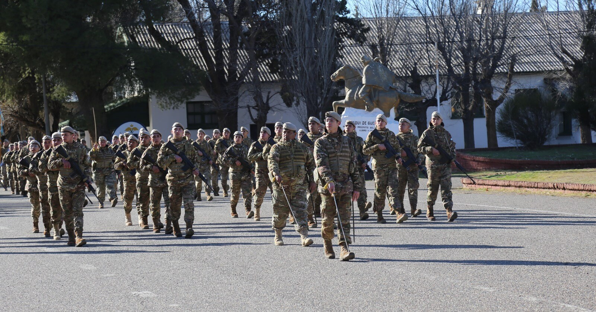

Servicio Militar Voluntario
Personal que se incorpora a la fuerza bajo el régimen de Incorporación por Periodo Determiando (IPD), para desempeñar funciones operativas y de servicios en los distintos destinos, organismos o dependencias de la Ejercito
"Forjando el Futuro con Honor y Sacrificio"
Finalidad
El Servicio Militar Voluntario es la prestación que efectúan por propia decisión los argentinos varones o mujeres, nativos, por opción o ciudadanos naturalizados, con la finalidad de cubrir los requerimientos de personal de soldados de las unidades de combate, dependencias y organismos del Ejercito
Nuestro arma
El Arma de Ingenieros en el Ejército Argentino es responsable de proporcionar apoyo en ingeniería, construcción, demolición, movilidad y desminado en el campo de batalla. Sus principales funciones incluyen:
Construcción y Mantenimiento de Infraestructura: Los ingenieros militares argentinos están capacitados para construir y mantener infraestructuras como puentes, carreteras, edificaciones y fortificaciones en el campo de batalla.
Construcción y Mantenimiento de Infraestructura: Los ingenieros militares argentinos están capacitados para construir y mantener infraestructuras como puentes, carreteras, edificaciones y fortificaciones en el campo de batalla.
Desminado y Desactivación de Explosivos: Los ingenieros tienen la tarea de detectar y desactivar minas terrestres y otros dispositivos explosivos improvisados (IEDs) para garantizar la seguridad de las fuerzas y la población civil.
>Demolición de Objetivos Estratégicos: Pueden llevar a cabo operaciones de demolición para destruir objetivos específicos, como puentes o edificios, con el fin de obstaculizar el avance del enemigo.
Apoyo en Emergencias y Desastres: Además de su función militar, los ingenieros militares argentinos también pueden desplegarse en situaciones de desastre natural para realizar tareas de búsqueda y rescate, construcción de refugios temporales y reparación de infraestructura dañada.
En resumen, el Arma de Ingenieros en el Ejército Argentino desempeña un papel esencial en la mejora de la movilidad y la capacidad de combate de las fuerzas militares, así como en la gestión de situaciones de emergencia y desastres.
Beneficios Ofrecidos
Capacitación, educación e instrucción para desempeñarse dentro del Sistema de Defensa Nacional.
Cobertura de Obra Social y Seguro de Vida.
Certificación de la capacidad laboral u oficio adquirido durante su permanencia en servicio. Los años de Servicio Militar Voluntario serán bonificables para el cómputo de los años de jubilación.
Anualmente el Ejercito Argentino incorpora ciudadanos de ambos sexos para cubrir vacantes en el Servicio Militar Voluntario como Soldados. Son requisitos de inscripción ser argentino, soltero, tener entre 18 y 24 años, tener aprobado el Ciclo completo de Educación Primaria.